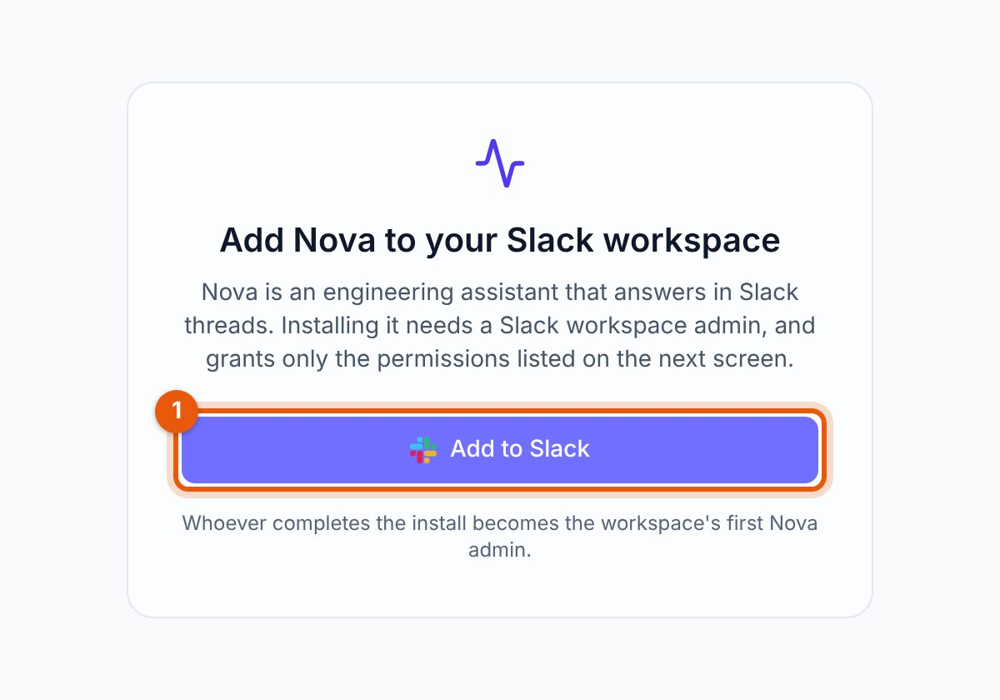
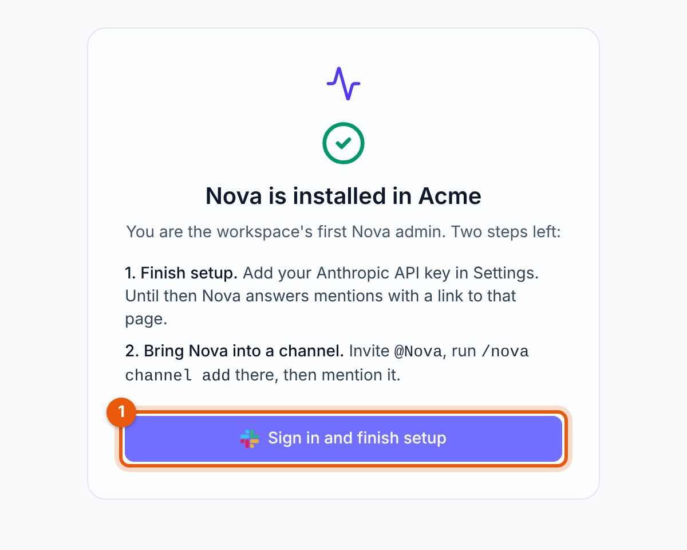
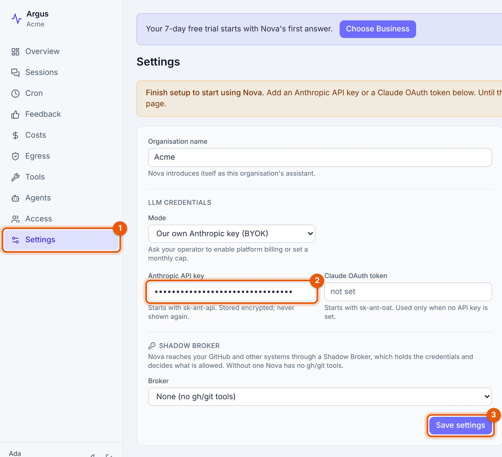
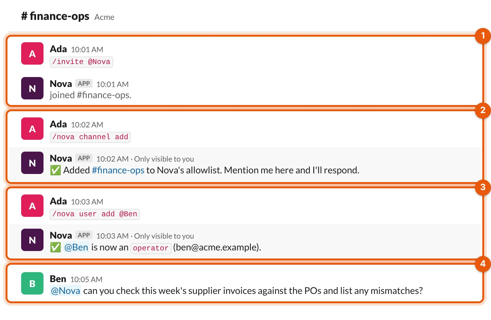
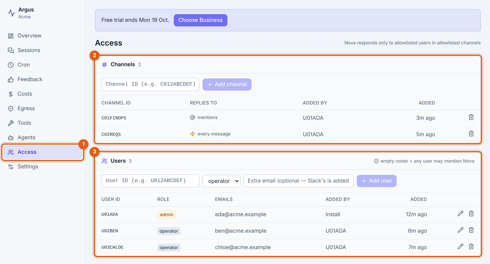
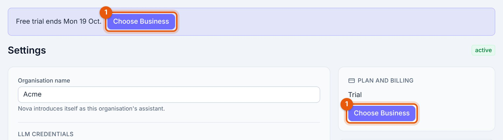
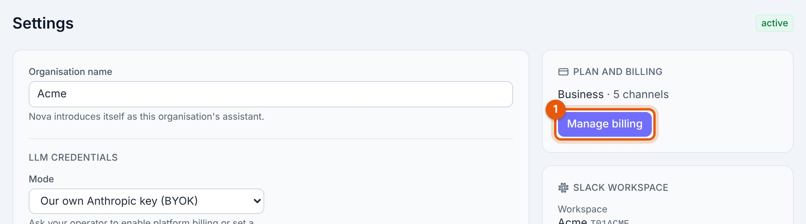

Get started with Nova
Nova is an AI agent that works in your Slack workspace. You set her up yourself, from Slack and a browser, and the first week is free.
01Before you start
- A Slack workspace where you can install apps. If you aren't a workspace admin, ask one to do step 2.
- An Anthropic API key. Create one at console.anthropic.com. Nova runs on it, and Anthropic bills you for that usage directly.
- No card. You only need one when you choose a plan.
02Add Nova to Slack
Open control.mouline.co.uk/install, click Add to Slack and approve the permissions Slack shows you. Whoever completes the install becomes the workspace's first Nova admin. Enterprise Grid org-wide installs aren't supported; install into one workspace.




03Add your Anthropic key
Sign in with Slack at control.mouline.co.uk. This is Nova's dashboard, and it shows only your workspace. Open Settings, paste your key under Anthropic API key and save.
Until a key is saved, Nova answers every mention with a link to Settings and does no work.

04Bring Nova into a channel
In the Slack channel where you want Nova to work:
- Invite her:
/invite @Nova - Enable her there:
/nova channel add(Nova admins only)

By default Nova answers when someone mentions her. To have her pick up every new message in a channel, such as a support or requests channel, run /nova channel auto on there. /nova channel auto off switches back.
05Add your team
Nova only answers people you've allowed. Add someone with /nova user add @name in Slack, or on the dashboard's Access page. During the trial up to 10 people can use Nova, admins included. On Business, there's no limit.

06Give her real work
Mention @Nova in a thread and ask for a task your team does every week. Each Slack thread is one ongoing conversation, so reply in the same thread to follow up or correct her. A person reviews anything consequential before it happens.
The dashboard shows what Nova did in each conversation and what it cost, and lets admins manage access, egress rules, scheduled jobs and settings.
07Your free trial
Every new workspace gets a 7-day free trial. It starts the first time Nova answers someone, not when you install, so setup doesn't use it up.
- Up to 3 channels and 10 people during the trial. Going over is refused with a message naming the limit; removing one frees a slot.
- The dashboard shows the trial's end date, and Nova sends admins a reminder in Slack. Nobody else gets them.
- Removing and reinstalling Nova keeps the trial where it was.
Earn more days
Trying more of Nova extends the trial, by up to 30 extra working days (Monday to Friday) in total. Each counts once:
| Do this | Earn |
|---|---|
| Save a Shadow Broker connection in Settings | +3 working days |
| Add your first egress allow rule on the dashboard | +3 working days |
| Have your first scheduled job run successfully | +3 working days |
| Each new person who gets an answer from Nova | +2 working days |
The first person's answer starts the trial, so it doesn't earn days. Days earned before the trial starts still count.
When the trial ends
If you haven't chosen a plan, Nova pauses for everyone in the workspace. The Slack install and your data are kept for 30 days, and admins can still sign in to the dashboard. Choosing Business brings her back straight away. If you need more time, write to founders@mouline.work.
08Plans and paying
| Plan | Price | What you get |
|---|---|---|
| Free trial | $0 for 7 days | 3 channels, 10 people, plus any days you earn |
| Business | $10 per channel per month | 1 to 99 channels, chosen when you pay; unlimited people |
| Enterprise | $1,000 per month | Unlimited channels and people, deployed in your network with our team. Write to us |
Prices are in US dollars. Anthropic bills you separately for the usage on your key.
To pay for Business
- Sign in to the dashboard and open Settings. Admins also see a Choose Business button on the trial banner.
- Click Choose Business. Stripe Checkout opens.
- Pick how many channels Nova can be in, agree to the Terms, and pay by card.

You can pay at any time during the trial. The first month is charged at once, the trial ends, and the trial limits lift straight away. Settings then shows your plan and number of channels.
09Changing or cancelling
In Settings, Manage billing opens Stripe's billing portal. There you can:
- Add channels. Takes effect at once, charged pro rata for the rest of the month.
- Remove channels. Takes effect at your next renewal.
- Update your card and download invoices.
- Cancel. Nova keeps working until the end of the month you paid for.

We don't refund part months; see the refund policy. If a payment fails, Nova pauses and comes back as soon as the payment goes through.
10If Nova won't answer
Nova always says why. The message tells you what to do:
| Nova says | What to do |
|---|---|
| A link to Settings, with no answer | An admin hasn't saved the Anthropic key yet. Add it. |
| Nova isn't enabled in this channel yet | A Nova admin runs /nova channel add in that channel. |
| You're not on Nova's allowlist | A Nova admin runs /nova user add @you. |
| A trial limit was reached | Remove a channel or person, or choose Business to lift the limits. |
| Trial has ended | An admin chooses Business in Settings. |
| Nova is paused because this workspace's subscription isn't active | An admin updates the card under Manage billing. |
11Questions
What does Nova cost in total?
Your plan, plus what Anthropic charges for the usage on your own key. Mouline doesn't mark it up.
What counts as a channel?
Each Slack channel where Nova is enabled with /nova channel add, including channels set to auto-reply. On Business you pay for the number of channels you pick, however many you've enabled so far.
Who can change settings and billing?
Nova admins. The person who installs is the first; add more on the dashboard's Access page or with /nova user add @name admin.
Where does my data live?
On Business, Mouline hosts Nova for you, and each workspace gets its own database and its own Nova. On Enterprise, Nova runs in your own network. See the Privacy Policy.
How do I remove Nova?
Cancel under Manage billing if you pay, then remove the app from Slack. After you cancel, we keep your data for 30 days so you can come back, then delete it.
Anything else: founders@mouline.work.